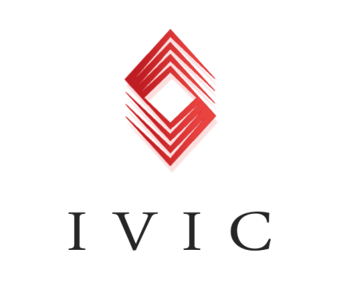

With the rapid development of the Internet and the rapid development of the Internet, the blockchain technology has become familiar to the world.
Core features of block chain:
I. consensus mechanism; Pass the correct message through the distributed node consensus algorithm.
Second, build a P2P distributed network and bring together the nodes to form a low-cost and efficient information transmission network.
Thirdly, through the cryptography and SHA256 algorithm, a secure and untampered blockchain database is formed.
The block chain technology has the characteristics of distributed, decentralization, detrusion, untampering and encryption security.
The application of block chain technology in financial industry is:
1. Digital currency. Bitcoin, ether, Turing, investment banking, etc.
2. Smart contracts. If it comes with a smart contract. Smart contracts can develop into standardized digital bills.
3. Confirmation of notarization. There are some transactions in the financial industry, such as payment transactions, loans, repayment of loans, etc., which can be confirmed by the block chain.
4. Distributed bookkeeping. The block chain technology itself is a partial accounting system, which can account for the business that happens, and the payment and settlement based on the block chain technology, such as the investment bank chain.
5. Equity crowdfunding. Equity crowdfunding based on block chain technology can achieve decentralized trust, and investors' returns are guaranteed.
IVIC的部分应用：
Some applications of IVIC:
IVIC (Investment Industry Chain) is by the Investment Banks Chain group independent research and development of Investment fund financial innovation platform, is committed to creating a block Chain of financial innovation Investment fund, the world, the password of the world business model based the obvious trend of ruling with platform together with the possibility of new technology. Its emergence will help sharpen the investment banking chain to attack the market, making the IVIC fund one of the most profitable financial instruments. We believe that blockchain is a transformational person in the field of investment, whether it is technology level or investment, it will link the destructive ideas directly to the people looking for investment opportunities.

IVIC will release a smart contract on the Ethereum network and transfer it to the Ethereum address, which will be available through the IVIC interface. Users who do not do so can still access their ICN through the investment banking chain.
IVIC can also predict that the market will create financial instruments that track stock prices or commodity values, more specifically than existing derivatives. If we define the traditional financial instruments for the expression of economic value, people might think, "expressive" issued by the current market is limited to the assets (such as money, stock), the financial relationship between the economic entities, and the value of the tool relative to the yuan statements. The prediction market can make more detailed and concrete statements about economic events, thus showing the value more clearly (along with risks) at the macro and micro economic levels.
IVIC has largely demonstrated the convergence of finance and funds and the adoption of blockchain technology, with the aim of enabling investors to gain greater investment benefit through IVIC. The wide use of blockchain technology brings unique features to the system provided by this paper, which enables the real investment banking chain to achieve a new level of reliability and process management. Due to the availability of automation and reliability, IVIC is a huge opportunity for those who believe in the technological progress of this project.
We firmly believe that the current wave of technology will lead to the arrival of a more inclusive, equal and beautiful life. Block ⼀ chain as one of important technology, will become more and more emitting its unique luster and energy. To participate in which is our most happiness and achievement.